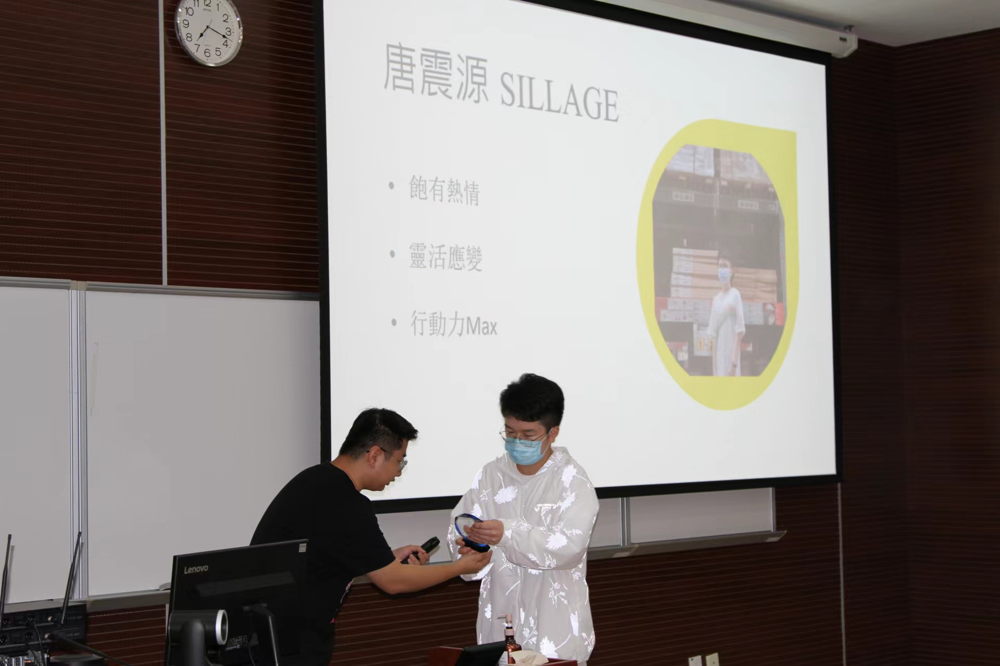
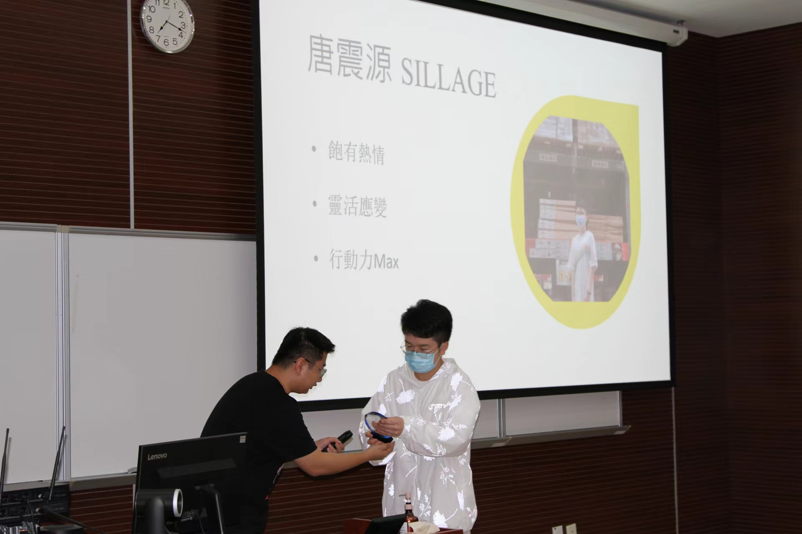

Experiences within the school
During her time at university, she was involved in the University Table Tennis Club as the Head of the Liaison Department and was awarded the title of Outstanding Officer. She was also involved in liaising with the Table Tennis Club both on and off campus, such as preparing and organising table tennis tournaments in Macau universities and liaising with the club for sponsorship.
During her time at university, she has been involved in researching and writing dissertations. As a TA in the Faculty of Medicine, she was involved in the preparation and pre-lab of teaching experiments and supervised students' experiments in laboratory courses and participated in laboratory teaching.
During her time at university, she was involved in the University Table Tennis Club as the Head of the Liaison Department and was awarded the title of Outstanding Officer. She was also involved in liaising with the Table Tennis Club both on and off campus, such as preparing and organising table tennis tournaments in Macau universities and liaising with the club for sponsorship.
During her time at university, she has been involved in researching and writing dissertations. As a TA in the Faculty of Medicine, she was involved in the preparation and pre-lab of teaching experiments and supervised students' experiments in laboratory courses and participated in laboratory teaching.
Internship experience
During the summer internship at Central South University Xiangya School of Public Health, she participated in animal and cellular experiments related to diabetes, performed gavage, exhaustion swim test and water maze on mice, and studied and performed dissection work on mice.
During the summer internship at Central South University Xiangya School of Public Health, she participated in animal and cellular experiments related to diabetes, performed gavage, exhaustion swim test and water maze on mice, and studied and performed dissection work on mice.